Iván Arribas (Depto. Análisis Económico. Universitat de València)
1 Introducción
Vamos a dar un pequeño paso en la complejidad de las series a analizar. En el Tema 4 aprendimos a predecir series que no tenían tendencia ni estacionalidad. En este tema estudiaremos series que presentan tendencia, sea creciente o decreciente, pero que siguen sin tener componente estacional, \(y_t = T_t + \varepsilon_t\).
La Figura 1 muestra ejemplos de este tipo de series. El panel superior muestra la serie Residuos, el volumen de residuos recogidos por las autoridades municipales y eliminados a través del sistema de gestión de residuos desde 1995 hasta 2022 en kg per cápita (fuente Instituto Nacional de Estadística). Se observa claramente que los últimos años del pasado siglo el volumen de residuos recogidos presentaba una tendencia creciente, que se invirtió al inicio del siglo. Luego, a principios de la década pasada, la serie paso de tendencia decreciente a estacionaria. El panel medio muestra la serie Aforo, el número medio de de vehículos diarios que pasan por Oropesa, carretera N-340, km. 996.48, desde 1960 a 2022 (fuente Ministerio de Transportes y Movilidad Sostenible). La tendencia de esta serie está muy relacionado con el ciclo económico, la inauguración de la AP-7 en 1978 y el fin de su peaje en 2020, y la pandemia. El panel inferior muestra el número de nacimientos anuales desde 1975 hasta 2023 (fuente Instituto Nacional de Estadística), serie que ya hemos comentado en el Tema 2.
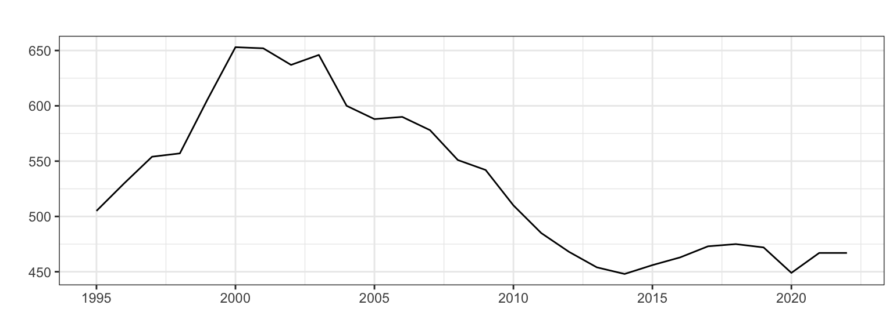
(a) Residuos (kg per cápita)
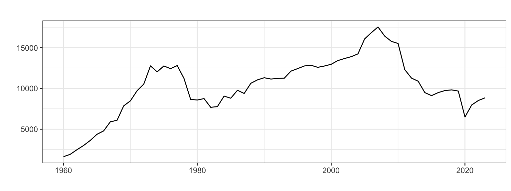
(b) Aforo (número de vehículos)
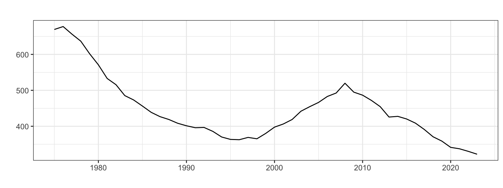
(c) Nacimientos (en miles)
Figura 1: Ejemplos de series con tendencia y sin estacionalidad
En este tema revisitaremos los tres métodos vistos en el Tema 4, métodos sencillos, métodos de Alisado exponencial y modelos Arima, y veremos como se deben adaptar y ampliar para capturar la componente de la tendencia.
Dentro del contexto de la series con tendencia, al estudiar los métodos de Alisado introduciremos el concepto de amortiguamiento que mejora la calidad de las predicciones a medio plazo; y en los modelos Arima el concepto de diferenciación para posibilitar el cumplimiento de la hipótesis de estacionariedad.
Además, veremos como aplicar la transformación logarítmica en el análisis y predicción de series temporales. Esta transformación tiene la propiedad de generar siempre predicciones positivas y ocasionalmente mejora la precisión de las predicciones.
2 Métodos sencillos de predicción
Veamos algunos métodos sencillos para series con tendencia y sin estacionalidad, sus funciones en el paquete forecast y un ejemplo de aplicación.
La predicción \(h\) periodos adelante es la última observación disponible más \(h\) veces el último incremento observado.
No tiene función en R, pero se podría emular mediante la función ets (véase epígrafe de 3 de este tema, Alisado de Holt).
Método de la deriva: \(\hat{y}_{T+h}=y_T+h\frac{y_T - y_1}{T-1}\).
La predicción \(h\) periodos adelante es la última observación disponible más \(h\) veces el incremento medio observado.
Función de R: rwf(y, h, drift = TRUE)
Observa que ambos métodos realmente solo hacen uso de dos observaciones de toda la serie y en ambos casos para obtener una pendiente con la que predecir.
2.2 Ejemplo de aplicación a la serie Residuos
Analizaremos Residuos, una serie anual de 1995 a 2022 (fuente Instituto Nacional de Estadística) que muestra los residuos recogidos por o en nombre de las autoridades municipales y eliminados a través del sistema de gestión de residuos. Los datos están disponibles en el fichero Residuos.csv. La primera columna tiene el año de la serie y la segunda contiene los residuos recogidos en kg per cápita. El panel a) de la Figura 1 muestra que es una serie con tendencia que ha cambiado con el tiempo.
residuos <-read.csv2("./series/Residuos.csv", header =TRUE)residuos <-ts(residuos[, 2],start =1995, frequency =1)derivaResiduos <-rwf(residuos, h =5, drift =TRUE)summary(derivaResiduos)
Forecast method: Random walk with drift
Model Information:
Call: rwf(y = residuos, h = 5, drift = TRUE)
Drift: -1.4074 (se 4.2266)
Residual sd: 21.962
Error measures:
ME RMSE MAE MPE MAPE MASE
Training set -1.684166e-14 21.55142 16.49657 -0.0954967 3.044183 0.9986713
ACF1
Training set 0.4069491
Forecasts:
Point Forecast Lo 80 Hi 80 Lo 95 Hi 95
2023 465.5926 436.9307 494.2544 421.7581 509.4271
2024 464.1852 422.9337 505.4366 401.0965 527.2738
2025 462.7778 411.3916 514.1640 384.1894 541.3662
2026 461.3704 401.0539 521.6869 369.1242 553.6165
2027 459.9630 391.4480 528.4779 355.1784 564.7475
La salida obtenida con summary muestra el resultado de la aplicación del método de la deriva, donde se ha fijado un horizonte de previsión de cinco años (h = 5). Primero el método calcula la pendiente media de toda la serie a partir del primer y último dato \(\frac{y_T - y_1}{T-1}\) que vale \(-1.4074\) (Drift en la salida). Después, la previsión para 2023 se obtiene sumando al último dato de la serie (467) la pendiente, que por ser negativa ofrece un volumen de residuos inferior al de 2023. Si sumamos sucesivamente la pendiente, vamos obteniendo el resto de predicciones.
La calidad de ajuste muestra un RMSE de 21.6 kg per cápita (16.5 kg per cápita si usamos el MAE) o del 3%. El método no ofrece sesgo (MPE inferior al 1%), pero las predicciones por intervalo no son fiables (ACF1 superior a 0.1).
En la Figura 2 muestra el resultado gráfico de la aplicación de este método. Observa que la predicción seria la continuación de una línea imaginaria que pasa por el primer y último dato de la serie.
autoplot(derivaResiduos, series ="",xlab ="",ylab ="Kg per cápita",main ="")
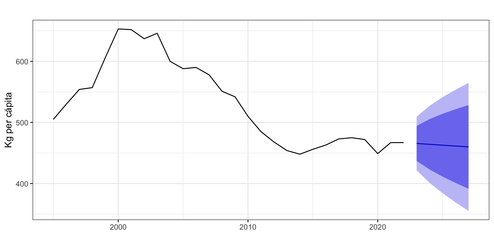
Figura 2: Recogida de residuos y predicción por el método de la Deriva
3 Alisado exponencial
3.1 Definición
Dentro de las series con tendencia y sin estacionalidad, para obtener una predicción en el periodo \(t+1\) con datos hasta el periodo \(t\) necesitamos dos componentes:
La estimación del nivel de la serie en el periodo \(t\): \(l_t\)
La estimación de la pendiente de la serie en el periodo \(t\): \(b_t\)
A partir de estas componentes obtenidas en el periodo \(t\) y para un esquema aditivo, se tendría que la predicción en el periodo \(t+1\) es:
\[\widehat{y}_{t+1} = l_t+b_t.\] Si el objetivo es estimar una previsión \(h\) periodos hacia delante desde el periodo \(t\), \(\widehat{y}_{t+h}\), hay que modificar la ecuación de predicción adecuadamente. Por ejemplo, para el caso aditivo se tendría que
\[\widehat{y}_{t+h} = l_t+hb_t.\]
3.2 Casos posibles
En las expresiones previas hemos supuesto que el nivel y la pendiente tienen esquema aditivo, pero puede ser multiplicativo (\(\widehat{y}_{t+h} = l_t \cdot b_t^h\)), donde la pendiente incremente porcentualmente el nivel de la serie. Además, la pendiente puede ser amortiguada, concepto que definiremos en breve.
Por otro lado, recordemos que el término de error de los modelos de alisado puede ser aditivo o multiplicativo. Si el residuo es aditivo, entonces el modelo es \(y_t = \widehat{y}_t + \widehat{\varepsilon}_t\). Ahora bien, si el residuo es multiplicativo, entonces el modelo es \(y_t = \widehat{y}_t \cdot (1 + \widehat{\varepsilon}_t)\).
Por tanto, dentro de las series con tendencia y sin estacionalidad hay 8 posibles casos: dos según el tipo de error por 4 según el tipo de tendencia. Si, por completitud, añadimos a estos casos los dos ya vistos para series estacionarias en el Tema 4, tememos la Tabla 1 de posibilidades. En la tabla, la primera letra hace referencia al tipo de error y la segunda al tipo de pendiente.
Tabla 1: Casos de alisado según el tipo de error y tendencia
Tendencia
Error
Aditivo (A)
Multiplicativo (M)
Ninguna (N)
A, N
M, N
Aditiva (A)
A, A
M, A
Aditiva Amortiguada (Ad)
A, Ad
M, Ad
Multiplicativa (M)
A, M
M, M
Multiplicativa Amortiguada (Md)
A, Md
M, Md
Cada caso difiere en las componentes que se observan y su esquema, dando lugar a un conjunto diferente de ecuaciones recursivas de actualización:
La ecuación de la predicción intramuestral a un periodo vista es
\[\widehat{y}_{t+1} = l_t + b_t,\] de forma que la ecuación de predicción extramuestral es \[\widehat{y}_{T+h}=l_T + h b_T.\]
Dos estimaciones razonables del nivel de la serie en el periodo \(t\) son el valor observado para la serie en ese periodo \(y_t\), y una estimación del nivel del periodo \(t\) realizada desde el periodo \(t-1\): \(l_{t-1} + b_{t-1}\). Por otro lado, dos estimaciones razonables de la pendiente de la serie en el periodo \(t\) son el cambio de nivel de \(t-1\) a \(t\) (el último observado) \(l_t-l_{t-1}\), y el valor de la pendiente en el periodo previo, \(b_{t-1}\). En ambos casos, nivel y pendiente, la estimación final es una media ponderada, parametrizada por \(0 < \alpha, \beta < 1\).
Observa que el método ingenuo II es un caso concreto de Alisado de Holt. Si hacemos \(\alpha=\beta = 1,\) queda \(l_t=y_t\) y \(b_t=y_t-y_{t-1}\), por tanto \[\widehat{y}_{t+1}=l_t + b_t = y_t + (y_t - y_{t-1})\] y \[\widehat{y}_{T+h}=l_T + h \cdot b_T = y_T + h(y_T - y_{T-1}).\]
¿Sabrías responder a estas preguntas?
Hemos visto que en modelo de Alisado con tendencia, si \(\alpha = \beta = 1\), la ecuación de predicción que queda es la del método Ingenuo II.
¿Cómo quedaría la ecuación de predicción si \(\alpha = \beta = 0\)?
¿Y si \(\alpha = 1\) y \(\beta = 0\)? ¿Y si \(\alpha = 0\) y \(\beta = 1\)?
Estimación de los parámetros del modelo
Para aplicar este método es necesario estimar unos valores iniciales \(l_0\) y \(b_0\) de las ecuaciones recursivas e identificar los valores más adecuados de los parámetros \(\alpha\) y \(\beta\).
La función ets por defecto estima los parámetros \(\alpha\), \(\beta\), \(l_0\) y \(b_0\) maximizando la función de verosimilitud. En este caso la búsqueda está restringida a \(0 < \beta < \alpha < 1\). Por tanto, \(\alpha\) y \(\beta\) nunca pueden ser 0 o 1 y en la práctica sus valores limite son 0.0001 y 0.9999.
La interpretación del parámetro \(\alpha\) es similar al caso del alisado exponencial simple.
Interpretación del parámetro\(\beta\):
Si \(\beta = 1\), \(b_t = l_t - l_{t-1}\), la pendiente se actualiza constantemente porque varía periodo a periodo Puede ser un indicador de mal ajuste (tendencia no lineal o pendiente no aditiva).
Si \(\beta = 0\), \(b_t = b_{t-1}= \ldots = b_0\), la pendiente se mantiene constante en el tiempo.
Ejemplo de aplicación a la serie Residuos
Vamos a usar el método de alisado de Holt para predecir la serie Residuos. Usaremos para ello la función ets con el argumento model = "AAN" (error y tendencia aditivas sin estacionalidad). Además, es necesario añadir el argumento damped = FALSE para prevenir el uso de tendencia amortiguada, que veremos en el siguiente epígrafe.
etsResiduos <-ets(residuos, model ="AAN",damped =FALSE)summary(etsResiduos)
ETS(A,A,N)
Call:
ets(y = residuos, model = "AAN", damped = FALSE)
Smoothing parameters:
alpha = 0.9917
beta = 1e-04
Initial states:
l = 568.957
b = -2.8916
sigma: 26.1313
AIC AICc BIC
281.7210 284.4483 288.3820
Training set error measures:
ME RMSE MAE MPE MAPE MASE
Training set -0.7573797 24.19288 18.21516 -0.2531821 3.386255 1.102711
ACF1
Training set 0.2192994
Los valores óptimos de los cuatro parámetros estimados son \(\alpha=\) 0.99, \(\beta=\) 0, \(l_0 =\) 568.96 y \(b_0 =\) -2.89.
Observa que \(\alpha\) es prácticamente 1 y que \(\beta\) es cero. Si aplicamos estos valores de los parámetros a las ecuaciones recursivas y la predicción extramuestral, obtenemos \(y_{T+h}=y_T + h\cdot b_0\): la predicción es el último valor observado más \(h\) veces la primera pendiente estimada. La calidad de las predicciones es razonable, con un error porcentual medio del 3.4%.
Por otro lado, el valor de \(l_0\) indica que el nivel estimado para el volumen de residuos de 1994 es de 568.96. Además, el incremento entre 1994 y 1995 se estima en \(b_0 =\) -2.89.
Parámetros estimados
¿Cuántos parámetros se han estimado (y la respuesta no es 4)? ¿Cuál es el denominador en el cálculo de RMSE y de sigma?
En el objeto etsResiduos la matriz etsResiduos$states guarda todos los valores obtenidos con las ecuaciones recursivas, en este caso el nivel y la pendiente, incluidos los valores de arranque. Puedes ver los valores de \(l_{2022}\) y \(b_{2022}\) en su última fila, que valen respectivamente
tail(etsResiduos$states, 1)
Time Series:
Start = 2022
End = 2022
Frequency = 1
l b
2022 466.9747 -2.893718
Así, la predicción para \(2023\) es \(\widehat{y}_{2023}=l_{2022} + b_{2022}=\) 466.97 \(+\) -2.89 \(=\) 464.08. Igualmente \(\widehat{y}_{2024}=l_{2022} + 2\cdot b_{2022}=\) 461.19. Es decir, el incremento entre previsiones es constante e igual a \(b_{2022}\) que, por ser \(\beta\) prácticamente nulo, casi coincide con \(b_0\).
Point Forecast Lo 95 Hi 95
2023 464.0810 412.8646 515.2974
2024 461.1873 389.0510 533.3236
2025 458.2936 370.0626 546.5245
2026 455.3998 353.5850 557.2147
2027 452.5061 338.7153 566.2970
La Figura 3 muestra la serie Residuos y las previsiones extramuestrales, que muestran una ligera tendencia decreciente.
autoplot(etsResiduosf,xlab ="",ylab ="Kg. per cápita",main ="")
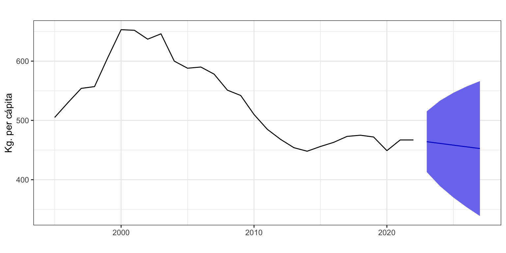
Figura 3: Residuos y predicción con alisado de Holt
3.4 Alisado exponencial con pendiente amortiguada (A, Ad, N)
Las previsiones con el método de Holt presentan siempre una pendiente constante. En previsiones a corto plazo esto no es un problema, pero para previsiones a largo plazo la experiencia indica que suele aparecer un sesgo de previsión. El alisado exponencial con pendiente amortiguada trata de corregir esta limitación. El mecanismo, propuesto por Gardner and Mckenzie (1985), es introducir un nuevo parámetro \(0 \leq \phi \leq 1\) que amortigua la tendencia hasta hacerla plana en el largo plazo.
La ecuación de la predicción intramuestral a un periodo vista es \[\widehat{y}_{t+1} = l_t + \phi b_t,\] de forma que la ecuación de predicción extramuestral es \[\widehat{y}_{T+h}=l_T + (\phi + \phi^2 + \ldots + \phi^h) b_T.\]
Se ha añadido un nuevo parámetro \(\phi\in [0, 1]\) que acompaña siempre a la pendiente \(b_t\). Si \(\phi = 1\), se tiene el alisado de Holt y si \(\phi = 0\), se tiene el alisado simple. Se puede comprobar que en el largo plazo las predicciones se hacen constantes e iguales a \(l_T + \phi b_T/(1 - \phi)\).
Por razones prácticas el rango de búsqueda de \(\phi\) queda en el intervalo \([0.8, 0.98]\). Si el valor óptimo de \(\phi\) fuera su valor máximo de \(0.98\) o muy cercano a este, cabría plantearse si no sería más adecuado un modelo sin amortiguamiento.
Ejemplo de aplicación a la serie Residuos
Vamos a usar el método de Alisado con amortiguamiento para predecir, una vez más, la serie Residuos añadiendo a la función ets el argumento damped = TRUE. En este caso, para ver el efecto del amortiguamiento vamos a pedir un horizonte temporal de previsión más largo.
etsDResiduos <-ets(residuos, model ="AAN", damped =TRUE)summary(etsDResiduos)
ETS(A,Ad,N)
Call:
ets(y = residuos, model = "AAN", damped = TRUE)
Smoothing parameters:
alpha = 0.9999
beta = 0.1808
phi = 0.8
Initial states:
l = 564.3968
b = 14.5779
sigma: 26.4267
AIC AICc BIC
283.1587 287.1587 291.1520
Training set error measures:
ME RMSE MAE MPE MAPE MASE ACF1
Training set -3.193352 23.9512 17.42662 -0.6361345 3.226137 1.054975 0.04099902
El valor óptimo del parámetro \(\phi\) es \(0.8\) y el error porcentual 3.2%, algo inferior al obtenido con el alisado de Holt sin amortiguamiento. Además, el modelo de Alisado con amortiguamiento genera intervalos de predicción correctos, cosa que no ocurría con el modelo de Alisado de Holt.
Parámetros estimados
¿Cuántos parámetros se han estimado en este caso? ¿Cuáles?
La Figura 4 muestra la serie Residuos, su estimación intramuestral y las predicciones a 15 años vista. Observa que la pendiente de las previsiones se amortigua en el tiempo, de forma que al principio las previsiones crecen más rápidamente que en los últimos años.
etsDResiduosf <-forecast(etsDResiduos, h =15,level =95)etsDResiduosf
autoplot(etsDResiduosf,xlab ="",ylab ="kg per cápita",main ="",PI =FALSE)
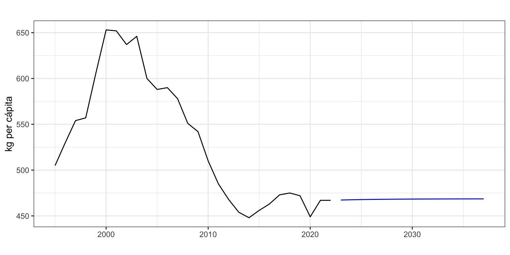
Figura 4: Residuos y predicción con alisado exponencial con amortiguamiento
3.5 Casos generales de alisado exponencial
En los epígrafes previos hemos visto dos de los diez casos expuestos en la taxonomía de la Tabla 1, fijados a partir de los argumentos model y damped de la función ets. ¿Pero cómo sabemos nosotros cuál es realmente el modelo que mejor se ajusta a nuestros datos? Veamos ahora como estimar cualquiera de los modelos que surgen según las diferentes posibilidades de la tendencia (N, A, Ad, M y Md) y el error (A, M).
Recordemos que el tipo de modelo en ets se especifica con el argumento model y que damped indica si hay amortiguamiento. Por ejemplo, model = "AAN", damped = FALSE indica alisado de Holt y model = "MMN", damped = TRUE indica un modelo con error y pendiente multiplicativas y con amortiguamiento.
Si en una de las tres letras del código del modelo se indica “Z”, la función ets selecciona de entre los modelos posibles el que mejor se ajusta. Si ademas se indica damped = NULL (o no se indica nada) se dejaría a la función total libertad para buscar entre modelos con y sin amortiguamiento.
Por ejemplo, model = "ZAN" indica un modelo con pendiente aditiva, sin estacionalidad y dejaría a ets la búsqueda de la mejor opción para el error (aditivo o multiplicativo) y para el amortiguamiento. Si se especifica model = "ZZZ" junto con damped = NULL (opciones por defecto) se dejaría a la función total libertad para buscar entre todos los modelos. Si se desea restringir la búsqueda a modelos sin amortiguamiento basta indicar damped = FALSE y si se desea restringir la búsqueda solo a modelos aditivos se puede usar el argumento additive.only = TRUE.
En realidad, por defecto ets no considera modelos con tendencia multiplicativa (últimas dos líneas de la Tabla 1). Debes fijar el parámetro allow.multiplicative.trend = TRUE para incluir en la búsqueda estos modelos.
Cuando se pide a función ets elegir entre varias modelos, por defecto elige aquel con menor AICc, pero recuerda que el argumento ic permite cambiar de criterio.
Por ejemplo, para Residuos si no restringimos la búsqueda, la función ets muestra que el modelo con mejor ajuste es “MNN” con \(\alpha = 1\). Es decir, el Ingenuo I con error multiplicativo.
summary(ets(residuos))
ETS(M,N,N)
Call:
ets(y = residuos)
Smoothing parameters:
alpha = 0.9999
Initial states:
l = 504.2743
sigma: 0.0395
AIC AICc BIC
267.4168 268.4168 271.4134
Training set error measures:
ME RMSE MAE MPE MAPE MASE
Training set -1.331356 21.20947 15.95526 -0.3461958 2.946509 0.9659013
ACF1
Training set 0.4113965
Una reflexión sobre los métodos automáticos de selección de modelos
Con el comando forecast(ets(nacimientos),h=24) obtenemos una predicción mensual a dos años vista del número de nacimientos en España. Así de simple, solo 31 caracteres. Todo esto gracias a que un algoritmo interno ha estimado los parámetros de múltiples modelos, elegido el mejor modelo de todos y lo ha usado para obtener las predicciones. Podemos afirmar que tenemos las mejores predicciones. Un momento, ¿podemos?
Parémonos a reflexionar sobre lo que hemos hecho o, más bien, lo que el algoritmo ha hecho y a contrastarlo con lo que nosotros queríamos. Por un lado, el algoritmo estima los parámetros de un menú fijo de modelos y para ello usa un criterio de optimización, que por defecto es maximizar la función de verosimilitud; cuando ya tiene estimados todos los modelos, elije el mejor usando el criterio de información de Akaike corregido para muestras pequeñas; y finalmente, nosotros medimos la capacidad predictiva del modelo seleccionado usando el error absoluto porcentual medio. Vaya, resulta que en los procesos de identificación y estimación del mejor modelo se usan dos criterios diferentes, que además no coinciden con nuestro criterio de calidad de las predicciones.
Si consideramos que la calidad de un modelo viene dada por el error absoluto porcentual medio en las predicciones intramuestrales a un periodo vista (lo que hemos decidido llamar MAPE), ¿no deberíamos estimar los parámetros del modelo usando como criterio la minimización del MAPE?, ¿no deberíamos elegir entre varios modelos aquel que presenta un MAPE menor? De esta forma, en todos los pasos del proceso se usa el mismo criterio, que es, además, el criterio que hemos considerado adecuado para valorar la calidad de las predicciones.
Pero no es esto lo que hacemos.
Nada nos garantiza que el modelo estimado y seleccionado por el algoritmo estime las mejores predicciones posibles. Y por mejores quiero decir que de entre todos los posibles modelos del menú y todos los posibles valores de sus parámetros, el seleccionado sea el que minimiza nuestro criterio de calidad de las predicciones.
Ahora ya podemos dar respuesta a la pregunta del primer párrafo: no, no podemos afirmar que nuestras predicciones sean las mejores.
Alguien dirá que casi seguro entre las predicciones subóptimas obtenidas por el algoritmo con su extraña mezcla de criterios y las predicciones óptimas de verdad no habrá mucha diferencia. Total, que más da una función de verosimilitud que un criterio de información que una medida del error medio. Pero lo cierto es que no lo sabemos, no tenemos ni idea de la distancia que hay entre lo óptimo y lo subóptimo, y si el coste de equivocarme en las predicciones es alto, puede que incluso una pequeña diferencia sea relevante.
Esta reflexión realizada en el contexto de series temporales y para la función ets es aplicable a todos los casos donde dejamos que un algoritmo ya programado elija el mejor modelo, y se basa en el hecho de que rara vez los criterios de estimación y elección que usan los algoritmos coinciden con el concepto de calidad de ajuste que estamos interesados.
A pesar de lo aquí expuesto, como es más cómodo (y rápido) tirar de rutinas ya programadas que escribir nuestro propio código, seguiremos trabajando con modelos subóptimos y obteniendo estimaciones subóptimas, pero diciendo que son las mejores.
4 Modelos ARIMA
4.1 Diferenciación de una serie
Recuerda que para poder aplicar estos modelos, la serie tiene que ser estacionaria en media, en varianza y ergódica. Además, por el tipo de series que estamos analizando, estas son siempre estacionarias en varianza y la estacionariedad en media implica ergodicidad. Es decir, para series sin estacionalidad solo necesitamos para aplicar modelos Arima que la serie sea estacionaria en media.
Por tanto, ¿qué pasa si una serie temporal \(\{y_t\}_{t=1}^T\) no es estacionaria en media?. A continuación veremos una transformación muy sencilla que convierten una serie no estacionaria en estacionaria, la diferenciación.
En el panel superior de la Figura 5 vuelves a tener la serie de aforo vista al inicio del tema, que denominaremos \(y_t\). En el panel inferior la diferencia de la serie, \(y_t - y_{t-1}\). La serie Aforo no es estacionaria en media, pero su diferencia si es estacionaria en media.
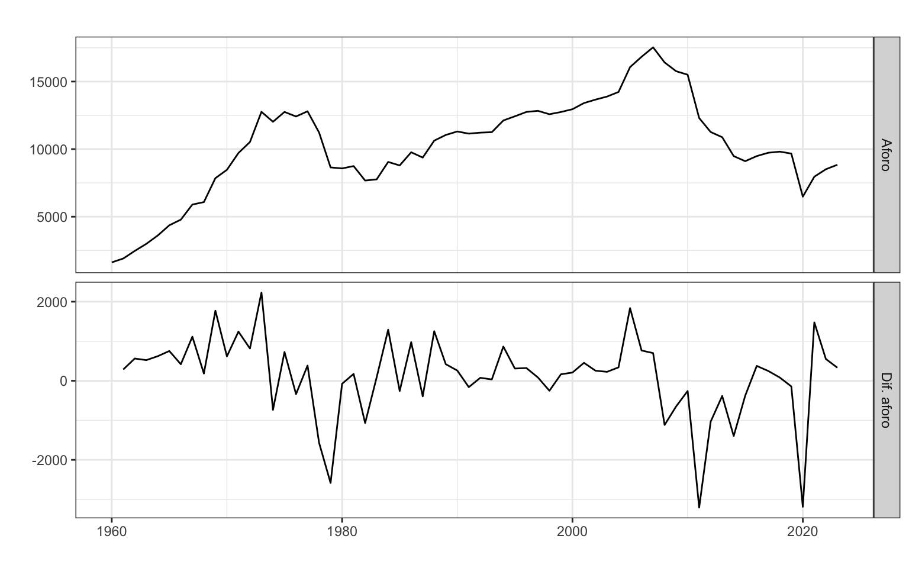
Figura 5: Aforo y su diferencia
La diferenciación permite transformar una serie no estacionaria en media en estacionaria en media. Diferenciar de orden \(k\) consiste en restar a la observación de un periodo la de \(k\) periodos antes: \[\nabla_k y_t = y_t - y_{t-k}.\]
Un caso concreto es la diferenciación regular o diferenciación de orden uno, que consiste en restar a la observación de un periodo la del periodo precedente: \[\nabla y_t = y_t - y_{t-1}.\]
Si \(\nabla y_t\) no fuera estacionaria, se diferenciaría una segunda vez para obtener una doble diferenciación de primer orden: \[\nabla^{2} y_t = \nabla(\nabla y_t) = \nabla y_t - \nabla y_{t-1} = (y_t - y_{t-1}) - (y_{t-1} - y_{t-2}) = y_t - 2y_{t-1} + y_{t-2}\]
En la práctica una sola diferenciación suele ser suficiente para obtener la estacionariedad en media; diferenciar dos veces es excepcional; y diferenciar tres o más veces no se da.
Diferenciación con R
R dispone de la función diff para diferenciar una serie:
diff(x, lag = k) calcula la diferencia de orden \(k\), \(\nabla_k y_t\)
diff(x) calcula la diferencia regular o de orden \(1\), \(\nabla y_t\) (el valor por defecto de lag es 1)
Además, en forecast está disponible la función ndiffs que estima el número de diferencias regulares necesarias para que una serie sea estacionaria. Para ello usa un contraste de raíces unitarias (que no veremos en este curso). Para la serie Aforo la función sugiere una diferenciación. Lo mismo ocurre para la serie Residuos.
ndiffs(aforo)
[1] 1
ndiffs(residuos)
[1] 1
Sin embargo, para la serie Nacimientos, el número de diferenciaciones sugerida es 2.
ndiffs(nacimientos)
[1] 2
Operador Retardo (de nuevo)
Podemos usar el operador retardo para escribir la diferenciación de una forma más operativa. Así,
Ya vimos que ARIMA surge de combinar las siglas de tres procesos diferentes: AR de AutoRegresive, I de Integrated y MA de Moving Average. De ellos vimos en el Tema 4 los procesos AR y MA.
Veamos ahora la I.
Integración, I
Si la serie \(y_t\) no es estacionaria, pero tras diferenciarla \(d\) veces se hace estacionaria, diremos que la serie es integrada de orden \(d\): \(y_t \sim I(d)\). Por tanto,
una serie estacionaria se indicará como \(y_t \sim I(0)\)
\(y_t \sim I(d)\) es equivalente a \(\nabla^d y_t = (1 - L)^d y_t \sim I(0)\)
Una serie \(y_t\) sigue un proceso \(ARIMA(p,d,q)\) si:
hay que diferenciar la serie \(d\) veces para hacerla estacionaria, \(y_t \sim I(d)\); y
la serie diferenciada sigue un proceso ARMA(p,q), \(\nabla^d y_t \sim ARMA(p,q)\).
\(y_t \sim ARIMA(0, 1, 0): \;\;(1- L) y_t = c + \varepsilon_t\) o \(y_t = c + y_{t-1} + \varepsilon_t\). Si \(c=0\), tenemos un paseo aleatorio; si \(c \neq 0\), tenemos un paseo aleatorio con deriva.
\(y_t \sim ARIMA(1, 1, 1): \;\;(1 - \phi_1 L)(1- L) y_t = c + (1 + \theta_1 L) \varepsilon_t\) o \(y_t = c + y_{t-1} + \phi_1(y_{t-1} - y_{t-2}) + \theta_1 \varepsilon_{t-1} + \varepsilon_t\). Observa que a pesar de ser un proceso AR(1), la prediccion de la serie en el periodo \(t\) depende no solo del valor de la serie en el periodo \(t-1\), sino también de su valor en el periodo \(t-2\). Solo el uso del operador retardo permite escribir adecuadamente la ecuación de predicción.
4.3 Ejemplo de aplicación a la serie Residuos
Vamos a aplicar la metodología de Box-Jenkins a la serie Residuos.
Diferencación de la serie
El primer paso es transformar la serie original para que sea estacionaria. La Figura 6 muestra la gráfica de la serie y de su primera diferencia. Se aprecia que la serie original no es estacionaria en media, pero si lo es la serie diferenciada.
cbind("Residuos"= residuos,"Dif. Residuos"=diff(residuos)) %>%autoplot(facets =TRUE,xlab ="",ylab ="kg. per cápita",main ="")
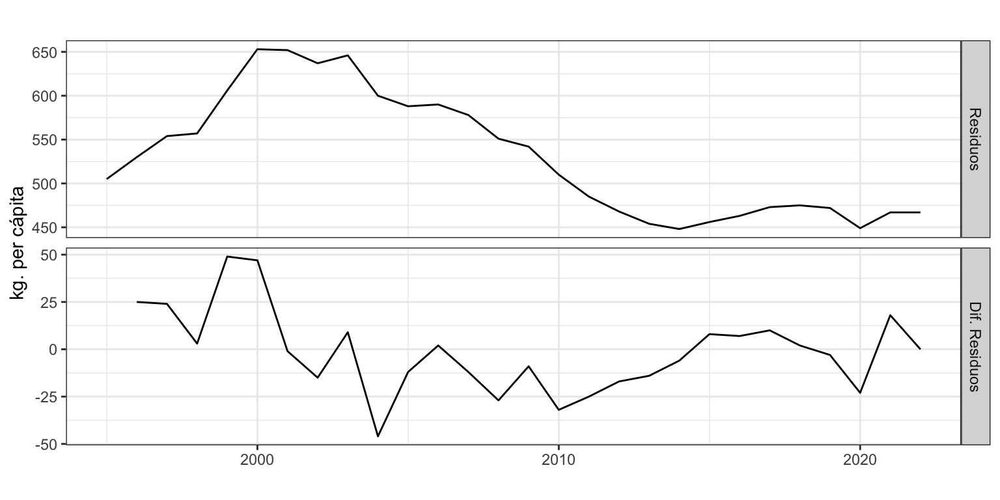
Figura 6: Residuos recogidos
Además,
ndiffs(residuos)
[1] 1
Podemos concluir que la primera diferencia de la serie Residuos es estacionaria y, por tanto, ergódica. Es decir, \(d=1\) o \(residuos_t \sim I(1)\).
Identificación
Tras diferenciar la serie, vamos a identificar los valores de \(p\) y \(q\), el paso más difícil, ayudándonos de la función auto.arima. Como ya hemos decidido el número de diferenciaciones, fijamos este parámetro con d = 1.
Observa como la identificación automática da como mejor modelo \(p=1\) y \(q=0\), donde el parámetro estimado parece siginficativo (supera los dos errores estándar). Es decir \(residuos_t \sim ARIMA(1,1,0)\) sin deriva (sin constante).
Estimación
Procedemos a estimar el modelo identificado con la función Arima, donde el proceso a estimar se indica en el argumento order y si hay constante en el argumento con include.constant.
arima110 <-Arima(residuos, order =c(1, 1, 0), include.constant =FALSE)arima110
Se analiza si para algún año se observa un error atípico (por ejemplo 3 veces superior al error estándar). La Figura 7 muestra que en los años 1999 y 2004, el residuo sobrepasa los dos errores estándar pero queda lejos de los tres errores estándar así que asumiremos que no hay valores atípicos.
El parámetro estimado \(\phi_1\) es significativo.
coeftest(arima110)
z test of coefficients:
Estimate Std. Error z value Pr(>|z|)
ar1 0.41776 0.17414 2.399 0.01644 *
---
Signif. codes: 0 '***' 0.001 '**' 0.01 '*' 0.05 '.' 0.1 ' ' 1
Medidas de error
El error medio es 19 kg per cápita (RMSE) y el error porcentual medio (MAPE) es 2.65%.
accuracy(arima110)
ME RMSE MAE MPE MAPE MASE ACF1
Training set -0.85 19.22 14.54 -0.19 2.65 0.88 -0.05
Además, hay no hay sesgo y la fórmula usada para la previsión por intervalo es correcta.
Interpretación del modelo
La serie Residuos sigue un proceso ARIMA(1, 1, 0). Es decir ls ecuación del modelo es \[(1 - \phi_1 L)(1 - L)y_t = \varepsilon_t\] y la de predicción es \[y_t = y_{t-1} + \phi_1(y_{t-1}- y_{t-2}) + \varepsilon_t\]
Si sustituimos los parámetros estimados se tiene que la ecuación de predicción estimada \[\hat y_t =y_{t-1} + 0.42(y_{t-1}- y_{t-2})\] Cada año, los residuos recogidos y tratados son iguales a los del año pasado más un 42% de la última variación observada.
Predicción
Una vez validado el modelo podemos pasar a realizar predicciones, en este caso a 5 años vista.
parima110 <-forecast(arima110, h =5, level =95)parima110
Point Forecast Lo 95 Hi 95
2023 467 427.9075 506.0925
2024 467 399.1766 534.8234
2025 467 374.9424 559.0576
2026 467 354.2518 579.7482
2027 467 336.2096 597.7904
Figura 8: Residuos (1995-2022) y predicción (2023-2027)
La Figura 8 muestra la serie, la previsión y el intervalo de confianza al 95%. La predicción es constante porque anecdoticamente el volumen de residuos de los dos últimos años ha sido el mismo (\(y_{T-1}=y_T\)). Es decir, la última variación es cero y la ecuación de predicción queda \(\hat y_{T+1} =y_T\). En las series diferenciadas el intervalo de confianza de las predicciones crece muy rápidamente porque los errores se van acumulando sin ningún tipo de amortiguamiento.
5 Ejemplo con transformación logarítmica
Una alternativa para predecir cualquier serie es predecir su transformación logarítmica. Después, se aplica la transformación inversa y se obtienen las predicciones de la serie original. No siempre, pero este procedimiento puede mejorar la calidad de las predicciones. Además, este proceso asegura que las predicciones y sus intervalos sean siempre positivas (ve a la píldora Series acotadas para aprender más sobre cómo garantizar que las predicciones sean positivas o que permanezcan dentro de cierto intervalo).
El uso de la transformación logarítmica en la estimación de modelos y predicción se puede realizar de forma sencilla y transparente con cualquiera de las funciones de que hemos visto a partir de los argumentos lambda y biasadj.
lambda = 0 indica que se ha de realizar la transformación logarítmica de la serie previamente a su modelización. Es un parámetro de la transformación Box-Cox que no veremos en detalle en este curso.
biasadj = TRUE es necesario si tras una transformación de la serie original queremos que las predicciones sean insesgadas. Es decir, queremos obtener la predicción media.
Sea \(y_t\) la serie original y \(z_t=log(y_t)\) su transformación logarítmica. Si obtenemos una predicción \(\widehat{y}_t\) de la serie original, esta será insesgada \(E[\widehat{y}_t]=y_t\). Ahora bien, si obtenemos una predicción \(\widehat{z}_t\) de la serie transformada, podemos pensar que \(e^{\widehat{z}_t}\) es una predicción insesgada de la serie original, pero resulta que \(E[e^{\widehat{z}_t}] \neq y_t\). Es decir, la exponencial de la predicción de la serie con transformada logarítmica no es insesgada.
Si el argumento biasadj es fijado a FALSE, las predicciones se calcularán de forma directa deshaciendo la transformación y serán sesgadas. En concreto, lo que se obtiene es una predicción mediana. Si, por el contrario, es fijado a TRUE, las predicciones se calcularán por medio de una fórmula alternativa y serán insesgadas.
En ambos casos, para series largas no debería observarse mucha diferencia entre las dos alternativas.
Vamos a practicar el uso de estos argumentos con la serie Residuos y el método de Alisado. Veamos cuál es el modelo de Alisado que mejor ajusta a la transformación logarítmica de la serie. Además, vamos a pedir que las predicciones sean insesgadas, biasadj = TRUE.
ETS(A,Ad,N)
Call:
ets(y = residuos, lambda = 0, biasadj = TRUE)
Box-Cox transformation: lambda= 0
Smoothing parameters:
alpha = 0.9934
beta = 0.3151
phi = 0.8
Initial states:
l = 6.1586
b = 0.0822
sigma: 0.0355
AIC AICc BIC
-87.15854 -83.15854 -79.16531
Training set error measures:
ME RMSE MAE MPE MAPE MASE
Training set -3.598389 18.38632 13.45029 -0.6414499 2.451673 0.8142555
ACF1
Training set 0.01152461
Al identificar el mejor modelo para la serie transformada obtenemos el modelo “AAdN”, es decir Holt con amortiguamiento. El error medio de ajuste es 2.5 % (MAPE), 0.7 p.p. inferior al obtenido con Alisado de Holt con amortiguamiento para la serie sin transformar.
Point Forecast Lo 95 Hi 95
2023 468.1629 436.4277 501.5737
2024 469.3098 419.2841 523.6200
2025 470.4810 403.7946 544.9870
2026 471.6892 389.4368 566.1444
2027 472.9379 376.0825 587.1313
Respecto de las predicciones, la Figura 9 muestra la serie Residuos y las previsiones extramuestrales obtenidas con y sin la transformación logarítmica. Podemos observar que para la serie transformada el volumen de residuos predicho crece más rápidamente que para la serie sin transformar.
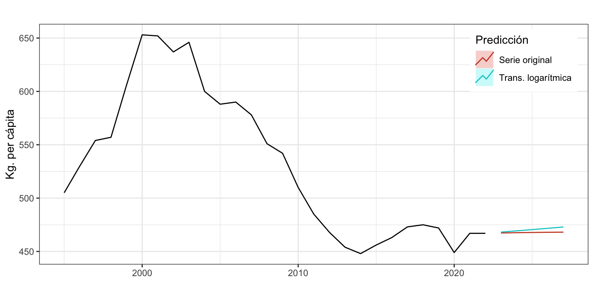
Figura 9: Residuos y dos predicciones con Alisado de Holt con amortiguamiento
La Tabla 2 muestra las predicciones de Residuos obtenidas sin transformar la serie, con transformación logarítmica y predicciones insesgadas (biasadj = TRUE), y con transformación logarítmica y predicciones sesgadas (biasadj = FALSE).
Tabla 2: Diferencias en la predicción según transformación logarítmica y corrección por sesgo
Sin transformar
log(Nac) insesgadas
log(Nac) sesgadas
467.3276
468.1629
467.8682
467.5896
469.3098
468.5569
467.7992
470.4810
469.1085
467.9669
471.6892
469.5503
468.1011
472.9379
469.9040
Para un mismo modelo, las predicciones sesgadas siempre son menores que las insesgadas. La diferencia depende fundamentalmente de la desviación típica del error, sigma en la salida de los métodos de alisado exponencial. Cuanto mayor es sigma, mayores son las diferencias.
Por otro lado, las predicciones obtenidas sin y con la transformación logarítmica no guardan ninguna relación.
Ni la transformación logarítmica ni el uso de predicciones insesgadas aseguran mejores predicciones respecto de otras opciones, como puede ser trabajar con predicciones sesgadas o no realizar la transformación logarítmica. Hay que usar Origen de predicción móvil para determinar que transformación es la mejor.
6 Ejemplo de aplicacion para la serie Aforo
Vamos a aplicar las diferentes metodologías vistas en este tema a la serie aforo de vehículos por Oropesa, carretera N-340, km. 996,48 (fuente Ministerio de Fomento). La serie es anual de 1960 a 2022 (63 datos). La serie ofrece el número medio diario de vehículos que pasan por esta carretera.
Los puntos de cambio en la tendencia de la serie Aforo están muy relacionados con la autopista AP-7 y las crisis ocurridas en España: la caída del aforo en 1979 se debe a la inauguración en 1978 del tramo de la AP-7 Torreblanca - Castellón; el incremento del Aforo al inicio de la década de los 80 se debe al periodo de expansión económica en España; y la caída en el aforo al partir de 2009 a la crisis financiera que llevó a la Gran Recesión. Además, se observa un clara intervención, la caída puntual en 2020 originada por el confinamiento durante la pandemia de la Covid-19.
6.1 Métodos sencillos
Vamos a empezar aplicando el método de la deriva a la serie. Podemos observar que el incremento promedio de la serie es de 114.6 vehículos diarios. Este será el incremento que se aplicará al dato de 2023 para obtener las predicciones. En concreto, para 2025 se espera un paso de 9071 vehículos diarios por la N-340 a su paso por Oropesa.
derivaAforo <-rwf(aforo, h =4, drift =TRUE)summary(derivaAforo)
Forecast method: Random walk with drift
Model Information:
Call: rwf(y = aforo, h = 4, drift = TRUE)
Drift: 114.6349 (se 127.5966)
Residual sd: 1012.7662
Error measures:
ME RMSE MAE MPE MAPE MASE
Training set 5.775913e-14 1004.696 688.7579 0.6342941 7.716355 0.9515316
ACF1
Training set 0.1926475
Forecasts:
Point Forecast Lo 80 Hi 80 Lo 95 Hi 95
2024 8956.635 7648.462 10264.81 6955.958 10957.31
2025 9071.270 7206.837 10935.70 6219.866 11922.67
2026 9185.905 6884.952 11486.86 5666.902 12704.91
2027 9300.540 6623.576 11977.50 5206.478 13394.60
El modelo ofrece un error de ajuste medio del 7.7% (unos 1000 vehículos según RMSE), no presenta sesgo y la predicción por intervalo no es fiable.
Como la pendiente media estimada es de 114.6 vehículos al día (drift), la predicción crece anualmente en esta cantidad.
6.2 Asilado exponencial
Estimacion del modelo
Si estimamos el mejor modelo de alisado exponencial para la serie Aforo sin ningún tipo de restricción, nos encontramos:
etsAforo <-ets(aforo)summary(etsAforo)
ETS(M,A,N)
Call:
ets(y = aforo)
Smoothing parameters:
alpha = 0.9432
beta = 0.0516
Initial states:
l = 754.8422
b = 748.8161
sigma: 0.1
AIC AICc BIC
1150.507 1151.541 1161.301
Training set error measures:
ME RMSE MAE MPE MAPE MASE ACF1
Training set -253.4493 1020.318 675.912 -3.048656 7.427081 0.9337848 0.1775309
El modelo estimado es ETS(M,A,N) o “MAN”, un modelo con pendiente aditiva, sin estacionalidad y con error multiplicativo. Es decir, \(y_{t+1} = (l_t + b_t) \cdot (1 + \varepsilon_{t+1})\).
El valor de \(\alpha\) prácticamente es 1, indicando que el nivel de la serie varía en el tiempo. Por otro lado, el valor de \(\beta\) prácticamente es 0, es decir, la pendiente se mantiene contante en el tiempo.
Respecto de la calidad ajuste del modelo, el valor de MAPE = \(7.4\)% es solo ligeramente inferior al obtenido con el método sencillo. Por otro lado, el modelo estimado presenta un marcado sesgo negativo (las predicciones en promedio son mayores que los valores reales) y las predicciones por intervalos no están correctamente calculadas.
Predicción
Mediante la función forecast podemos predecir el aforo para los proximos años. Como el último valor calculado para la pendiente \(b_T\) es negativo, se espera una progresiva reducción en el paso de vehículos por Oropesa. Con este método la predicción para 2025 es de 8638 vehículos diarios.
tail(etsAforo$states, 1)
Time Series:
Start = 2023
End = 2023
Frequency = 1
l b
2023 8814.216 -88.05432
etsResiduosPre <-forecast(etsAforo, h =4,level =95)etsResiduosPre
Point Forecast Lo 95 Hi 95
2024 8726.162 7016.524 10435.80
2025 8638.108 6232.767 11043.45
2026 8550.053 5561.714 11538.39
2027 8461.999 4944.569 11979.43
Análisis del residuo
Veamos si hay años atípicos.
error <-residuals(etsAforo)sderror <-sd(error)autoplot(error, series="Error",colour ="black",xlab ="Periodo",ylab ="Error",main ="") +geom_hline(yintercept =c(-3, -2, 2 ,3)*sderror, colour =c("red", "blue", "blue", "red"), lty =2) +scale_x_continuous(breaks=seq(1960, 2022, 4)) # Creamos un variable con todos las años de la seriefechas <-format(seq(as.Date("1960-01-01"), as.Date("2022-01-01"), "year"), "%Y")# Identificamos los años atípicosfechas[abs(error) >2.5* sderror]
[1] "1979" "2020"
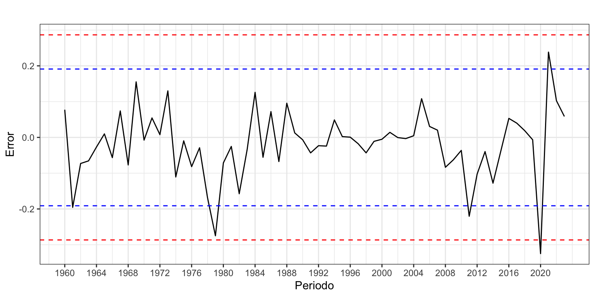
Figura 11: Error + Intervención
La Figura 11 muestra como intervención el año de la pandemia, con una caída en el aforo que superó las tres desviaciones típicas. También destaca en 1979 la caída en el aforo debida a la inauguración de la AP-7 en este tramo de carretera.
La prueba de Tukey solo identifica como atípico el año 2020.
La Figura 12 muestra que la serie Aforo no es estacionaria. Así, el primer paso es transformar la serie original para que lo sea. La serie no es estacionaria, pero sí lo es su primera diferencia. Ten siempre presente que diferenciar más veces de las necesarias puede dificultar la identificación y la interpretación. Por otro lado, la función ndiffs aconseja una diferenciación. Así, optamos por fijar \(d = 1\).
autoplot(aforo, xlab ="", ylab ="", main ="")autoplot(diff(aforo), xlab ="", ylab ="", main ="")
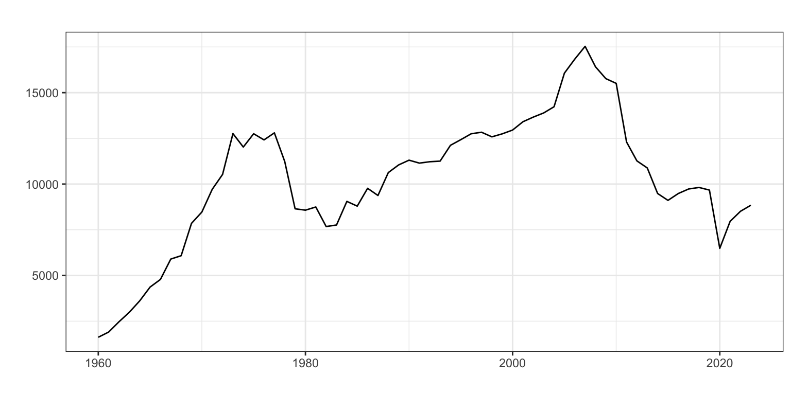
(a) Serie original
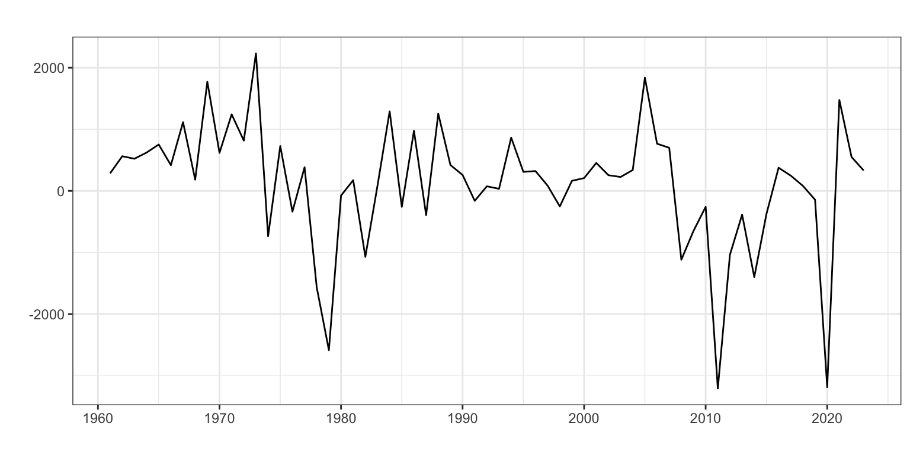
(b) Dif. de la serie
Figura 12: Gráfica para Aforo y su primera diferencia
ndiffs(aforo)
[1] 1
Identificación y Estimación
Veamos a identificar los valores de \(p\) y \(q\) a partir de auto.arima, indicándole que d = 1. La función sugiere un proceso ARIMA(0,1,0) sin constante.
Se identifican tres posibles valores extremos, tres intervenciones, en los años 1979, 2011 (relacionado con la Gran Recesión) y 2020, donde el error supera las 2.5 desviaciones típicas. Cada una de las intervenciones es del tipo pulso porque solo afecta un periodo de la serie y tienen una causa identificada.
Ahora, creamos una variable ficticia asociada a cada intervención, que denominaremos d1979, d2011 y d2020, y las incluiremos en la autoidentificación.
Las tres variables de intervención son significativas y el coeficiente \(\phi_2\) (ar2) también. No es significativo el coeficiente \(\phi_1\) (ar1) al 5% pero si al 10%.
Confirmamos que \(aforo_t \sim ARIMA(2,1,0)\) con intervención.
Medidas de error
El error de ajuste medio, medido con el RMSE, es 743 vehículos por día y el error porcentual medio (MAPE) es 5.99%, ambos muy inferiores a los obtenidos con el método sencillo y el Alisado exponencial. Además, hay sesgo de predicción (aunque menor que el observado con Alisado) y la fórmula empleada para el cálculo del intervalo de confianza de las predicciones es válida.
accuracy(arima210)
ME RMSE MAE MPE MAPE MASE ACF1
Training set 49.26 742.83 551.43 1.23 5.99 0.76 0.04
Interpretación del modelo
El modelo teórico es \(aforo_t \sim ARIMA(2,1,0) + d1979 + d2011 + d2020\):
Finalmente, el modelo estimado es: \[\widehat{aforo}_t = aforo_{t-1} + 0.20(aforo_{t-1}-aforo_{t-2}) + 0.41(aforo_{t-2}-aforo_{t-3})\]\[-1664 \cdot d1979 - 1188 \cdot d2011 - 2368 \cdot d2020\] Cada año el aforo es el mismo que el aforo del año pasado más un 20% del último incremento observado y un 41% del incremento anterior.
Respecto de la intervención, en 1979 hubo cerca de 1700 de vehículos por día menos de lo esperado debido a la apertura de la autopista AP-7; en 2011 hubo unos 1200 vehículos menos debido a la Gran Recesión; y en 2020 las restricciones de movilidad debidas a la pandemia redujeron el aforo en 2400 vehículos al día.
Predicción
Como hemos incluido tres variables ficticias en el ajuste, de cara a predecir el aforo hemos de indicar cuales serán los valores futuros para estas variables. En este caso serán cero puesto que son intervenciones que no responden a un efecto calendario. Las causas detrás de estas intervenciones no se espera que se repitan en el futuro.
Ya sabemos que en R esto se hace incluyendo en el comando forecast el argumento xreg = cbind(rep(0, 4), rep(0, 4), rep(0, 4)) que añade cinco ceros por cada variable de intervención porque la predicción va a ser a cinco años vista.
Point Forecast Lo 95 Hi 95
2024 9131.695 7602.320 10661.07
2025 9323.968 6934.030 11713.91
2026 9479.943 6008.483 12951.40
2027 9589.161 5142.358 14035.96
Para 2025 se espera un paso de 9324 vehículos al día por la N-340 a la altura de Oropesa.
6.4 Comparación entre modelos
Hemos visto que en calidad de ajuste, el modelo Arima supera en 1.5 p.p. al modelo de Alisado o en 280 vehículos, según atendamos al MAPE o al RMSE. Además, es el único método que ofrece predicciones por intervalo fiables.
Sin embargo seguimos sin saber cuál de los tres métodos ofrece la mejor calidad en las predicciones. La Figura 15 muestra la serie aforo y las predicciones obtenidas con cada método. Tanto Arima como el método simple preveen un incremento en el aforo, continuando con la tendencia reciente observada tras la pandemia. Por el contrario, según el método de Alisado el aforo irá disminuyendo, resultado que concuerda con el la tendencia general observada tras la Gran Recesión. ¿Que previsión resultará acertada?
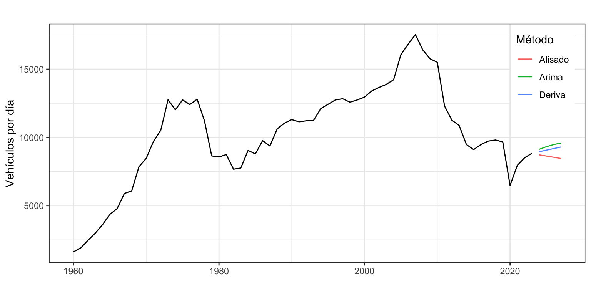
Figura 15: Aforo y predicicones con tres métodos
Vamos a aplicar origen de previsión móvil a los tres métodos para elegir la mejor predicción. Consideraremos que son necesarios 30 años para ajustar bien los modelos y haremos previsiones a 4 años vista.
Como criterio de calidad de las predicciones vamos a usar el RMSE. Se ha elegido calcular el error medio con lo que el cálculo las medidas de precisión estará algo afectado por los elevados errores observados en los tres año atípicos.
k <-30h <-4TT <-length(aforo)s <- TT - k - hrmseDer <- rmseAli <- rmseAri <-matrix(NA, s +1, h)for (i in0:s) { train.set <-subset(aforo, start = i +1, end = i + k) test.set <-subset(aforo, start = i + k +1, end = i + k + h) fcast <-rwf(train.set, h = h, drift =TRUE) rmseDer[i +1,] <- (test.set - fcast$mean)^2 fit <-ets(train.set, model ="MAN", damped =FALSE) fcast <-forecast(fit, h = h) rmseAli[i +1,] <- (test.set - fcast$mean)^2 fit <-Arima(train.set, order =c(2, 1, 0), include.constant =FALSE) fcast <-forecast(fit, h = h) rmseAri[i +1,] <- (test.set - fcast$mean)^2}rmseDerMedia <-sqrt(colMeans(rmseDer))rmseAliMedia <-sqrt(colMeans(rmseAli))rmseAriMedia <-sqrt(colMeans(rmseAri))round(rmseDerMedia, 2)
[1] 1045.48 1652.23 2207.89 2742.52
round(rmseAliMedia, 2)
[1] 1108.34 1767.07 2399.95 3129.44
round(rmseAriMedia, 2)
[1] 985.41 1487.23 1957.45 2484.06
El método Arima ofrece mejores predicciones para todos los horizontes temporales y el método de Alisado muestra la peor calidad en las previsiones, especialmente a largo plazo.
7 Ejemplo de aplicacion para la serie Nacimientos
En el siguiente ejemplo usaremos la serie Nacimientos anualizada desde el año 2000. Además, aplicaremos la transformación logarítmica para practicar este procedimiento.
El aumento de los nacimientos en España de madres inmigrantes —que en media tienen más hijos que las madres españolas— se vio interrumpido con la Gran Recesión. La crisis provocó que muchas familias de inmigrantes retornaran a su país de origen y generó una caída en la natalidad, que se ha mantenido hasta la fecha.
7.1 Métodos sencillo de la deriva
Vamos a empezar aplicando el método de la deriva a la transformación logarítmica de la serie. Ni para este método ni para los siguientes usaremos predicciones insesgadas.
derivaNacimientos <-rwf(nacimientos, h =4, lambda =0, drift =TRUE)summary(derivaNacimientos)
Forecast method: Random walk with drift
Model Information:
Call: rwf(y = nacimientos, h = 4, drift = TRUE, lambda = 0)
Drift: -0.0091 (se 0.0075)
Residual sd: 0.0359
Error measures:
ME RMSE MAE MPE MAPE MASE
Training set 599.0297 15473.06 13338.83 -0.06127007 3.075667 0.9486111
ACF1
Training set 0.5195922
Forecasts:
Point Forecast Lo 80 Hi 80 Lo 95 Hi 95
2024 319342.1 304700.7 334687.1 297223.7 343106.5
2025 316437.9 295711.7 338616.8 285295.2 350980.2
2026 313560.1 288121.2 341245.1 275501.0 356876.8
2027 310708.5 281264.3 343235.0 266824.4 361810.0
Como el número de nacimientos en 2023 es solo algo inferior al de 2000, el valor medio de la pendiente estimado por el método de la deriva es -0.0091. Por este motivo las predicciones para los próximos 4 años muestran una lenta caída de la natalidad del 0.91% anual.
Por otro lado, el modelo ofrece un error de ajuste medio del 3.1% (unos 15500 bebés según RMSE), no presenta sesgo y la predicción por intervalo no es fiable.
7.2 Asilado exponencial
Estimacion del modelo
Si estimamos el mejor modelo de alisado exponencial para la transformación logarítmica de la serie Nacimientos sin ningún tipo de restricción, nos encontramos:
ETS(A,A,N)
Call:
ets(y = nacimientos, lambda = 0)
Box-Cox transformation: lambda= 0
Smoothing parameters:
alpha = 0.8677
beta = 0.5162
Initial states:
l = 12.8623
b = 0.0288
sigma: 0.0287
AIC AICc BIC
-88.47180 -85.13847 -82.58153
Training set error measures:
ME RMSE MAE MPE MAPE MASE
Training set -2281.097 12257.41 8412.686 -0.4502361 1.919209 0.5982808
ACF1
Training set -0.06026791
El modelo estimado es ETS(A,A,N) o “AAN”, un modelo con pendiente y error aditivos y sin estacionalidad. Es decir, \(\log(y_{t+1}) = l_t + b_t + \varepsilon_{t+1}\). Cuando se usa la transformación logarítmica, nunca aparecerán componentes multiplicativas.
El valor de \(\alpha\) es cercano a 1, indicando que el nivel de la serie varía en el tiempo. El valor de \(\beta\) es 0.5. Es decir, la pendiente ha cambiado gradualmente con en el tiempo, pasando, en este caso, de positiva a negativa (véase Figura 17).
autoplot(etsNacimientos)
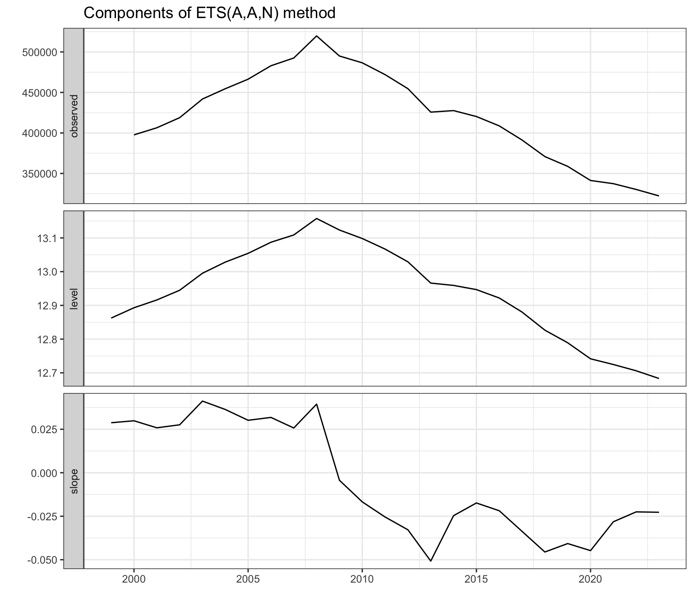
Figura 17
Respecto de la calidad ajuste del modelo, el valor de MAPE= \(1.9\)% es 1.2 p.p. inferior al obtenido con el método de la deriva. Otra ventaja del método de Alisado frente al de la deriva es que las predicciones por intervalos están correctamente calculadas.
Predicción
El último valor calculado para la pendiente \(b_T\) es igual al -0.0227. Es decir, cada año se espera una caída en los nacimientos del 2.3%.
tail(etsNacimientos$states, 1)
Time Series:
Start = 2023
End = 2023
Frequency = 1
l b
2023 12.68321 -0.02272149
etsNacimientosPre <-forecast(etsNacimientos, h =4,level =95)etsNacimientosPre
Point Forecast Lo 95 Hi 95
2024 315051.3 297793.5 333309.2
2025 307973.6 279730.8 339067.9
2026 301054.9 260703.0 347652.4
2027 294291.6 241405.6 358763.6
7.3 Modelo Arima
Transformación de la serie
La Figura 18 muestra que la serie Nacimientos, transformada logarítmicamente, no es estacionaria, pero si los es su primera diferencia. Sin embargo, la función ndiffs aconseja dos diferenciaciones al interpretar el escalón que se observa en la serie diferenciada (panel izquierdo de la Figura 18) como tendencia. Así, optamos por fijar \(d = 1\).
autoplot(log(nacimientos), xlab ="", ylab ="", main ="")autoplot(diff(log(nacimientos)), xlab ="", ylab ="", main ="")
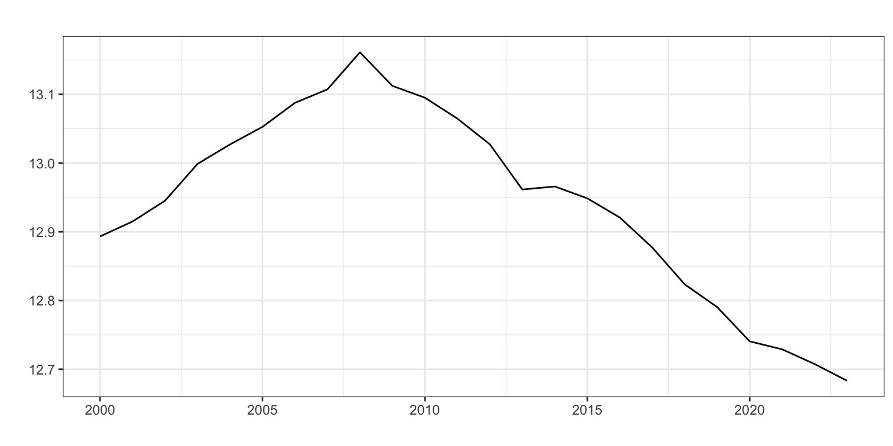
(a) Serie original (log)
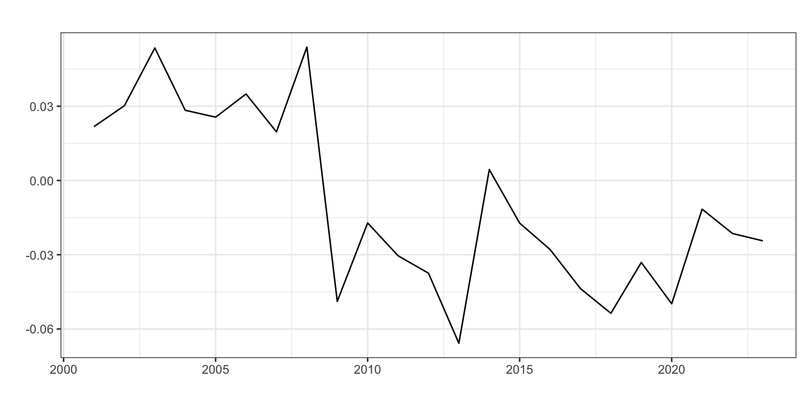
(b) Dif. de la serie (log)
Figura 18: Gráfica para Nacimientos y su primera diferencia
ndiffs(log(nacimientos))
[1] 2
Identificación y Estimación
Veamos a identificar los valores de \(p\) y \(q\) a partir de auto.arima, indicándole que d = 1. La función sugiere un proceso ARIMA(2,1,0) sin constante.
Veamos qué coeficientes estimados son significativos.
coeftest(arima110)
z test of coefficients:
Estimate Std. Error z value Pr(>|z|)
ar1 0.677044 0.145205 4.6627 3.121e-06 ***
xreg -0.029205 0.012631 -2.3120 0.02078 *
---
Signif. codes: 0 '***' 0.001 '**' 0.01 '*' 0.05 '.' 0.1 ' ' 1
Confirmamos que \(Nacimientos_t \sim ARIMA(1,1,0)\) sin constante y con intervención.
Medidas de error
El error de ajuste medio, medido con el RMSE, es 11887 bebés, inferior al obtenido con el método de Alisado. Sin embargo, el error porcentual medio (MAPE) es 1.97%, algo superior al del método de Alisado. Un ejemplo perfecto de que el método con mejor ajuste puede depender del criterio de calidad seleccionado. Además, no hay sesgo de predicción y la fórmula empleada para el cálculo del intervalo de confianza de las predicciones es válida.
accuracy(arima110)
ME RMSE MAE MPE MAPE MASE ACF1
Training set -1442.23 11886.86 8577.24 -0.34 1.97 0.61 -0.02
Interpretación del modelo
El modelo teórico es \(\log(Nacimientos_t) \sim ARIMA(1,1,0) + d2009\):
Cada año la tasa de variación anual de los nacimientos es un 70% de la tasa del año previo. Respecto de la intervención, en 2009 la tasa de variación anual fue 2.9 p.p inferior a lo esperado. Alternativamente, el 2009 el número de nacimientos fue un 2.9% inferior a lo esperado.
Predicción
Incluimos el argumento xreg = cbind(rep(0, 4)) para recoger el efecto nulo en el futuro de la intervención.
parima110 <-forecast(arima110, h =4, level =95,xreg =cbind(d1979=rep(0, 4)))parima110
Point Forecast Lo 95 Hi 95
2024 316994.9 300411.8 334493.4
2025 313470.5 282249.5 348145.1
2026 311106.7 266310.2 363438.5
2027 309516.4 252506.6 379397.6
7.4 Comparación entre modelos
Hemos visto que en calidad de ajuste, los modelos de Alisado y Arima superan al modelo simple. También hemos visto que el mejor entre Alisado y Arima depende del criterio de calidad de ajuste empleado.
La Figura 21 muestra la serie Nacimientos y las predicciones obtenidas con cada método. Todas ellas muestran un descenso continuado en la natalidad, especialmente marcado para el método de Alisado.
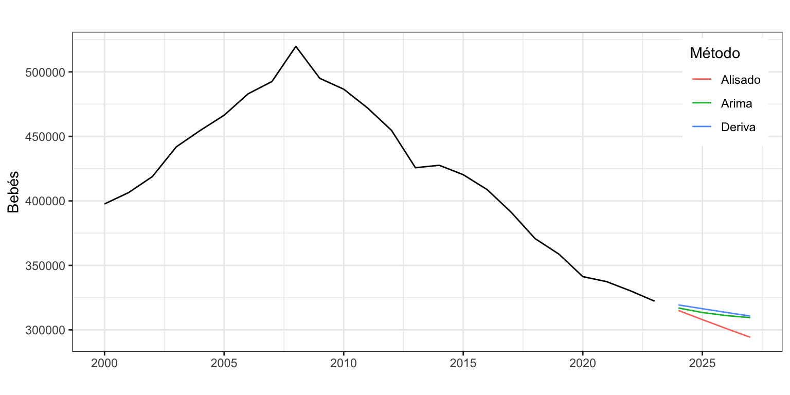
Figura 21: Nacimiento y predicicones con tres métodos
Veamos ahora qué metodo ofrece las predicciones con menor error con origen de previsión móvil. Consideraremos que son necesarios 20 años para ajustar bien los modelos y haremos previsiones a 4 años vista. Como criterio de calidad de las predicciones vamos a usar el MAPE.
k <-20h <-4TT <-length(nacimientos)s <- TT - k - hmapeDer <- mapeAli <- mapeAri <-matrix(NA, s +1, h)for (i in0:s) { train.set <-subset(nacimientos, start = i +1, end = i + k) test.set <-subset(nacimientos, start = i + k +1, end = i + k + h) fcast <-rwf(train.set, h = h, drift =TRUE, lambda =0) mapeDer[i +1,] <-100*abs(test.set - fcast$mean)/test.set fit <-ets(train.set, model ="AAN", damped =FALSE, lambda =0) fcast <-forecast(fit, h = h) mapeAli[i +1,] <-100*abs(test.set - fcast$mean)/test.set fit <-Arima(train.set, order =c(1, 1, 0), include.constant =FALSE, lambda =0) fcast <-forecast(fit, h = h) mapeAri[i +1,] <-100*abs(test.set - fcast$mean)/test.set}mapeDerMedia <-colMeans(mapeDer)mapeAliMedia <-colMeans(mapeAli)mapeAriMedia <-colMeans(mapeAri)round(mapeDerMedia, 2)
[1] 4.54 5.19 6.88 8.93
round(mapeAliMedia, 2)
[1] 0.74 2.18 4.08 5.67
round(mapeAriMedia, 2)
[1] 3.15 3.25 4.84 7.06
El método de Alisado ofrece mejores predicciones para todos los horizontes temporales y es especialmente bueno en sus predicciones a 1 o 2 años vista. El método Arima es el segundo en calidad de las predicciones, pero no puede competir contra el método de Alisado.
8 Resumen de los comandos utilizados
Función
Paquete
Descripción
diff
base
Diferencia una vector de datos numéricos
rwf
forecast
Predicción por el método de la deriva
References
Gardner, Everette S., and Ed. Mckenzie. 1985. “Forecasting Trends in Time Series.”Management Science 31 (10): 1237–46. https://doi.org/10.1287/mnsc.31.10.1237.
Hyndman, Rob J., and Y. Khandakar. 2008. “Automatic Time Series Forecasting: The Forecast Package for r.”Journal of Statistical Software 27 (3): 1–22. https://doi.org/10.18637/jss.v027.i03.
Hyndman, Rob J., A. Koehler, K. Ord, and R. Snyder. 2008. Forecasting with Exponential Smoothings. The State Space Approach. Springer Berlin, Heidelberg. https://doi.org/10.1007/978-3-540-71918-2.